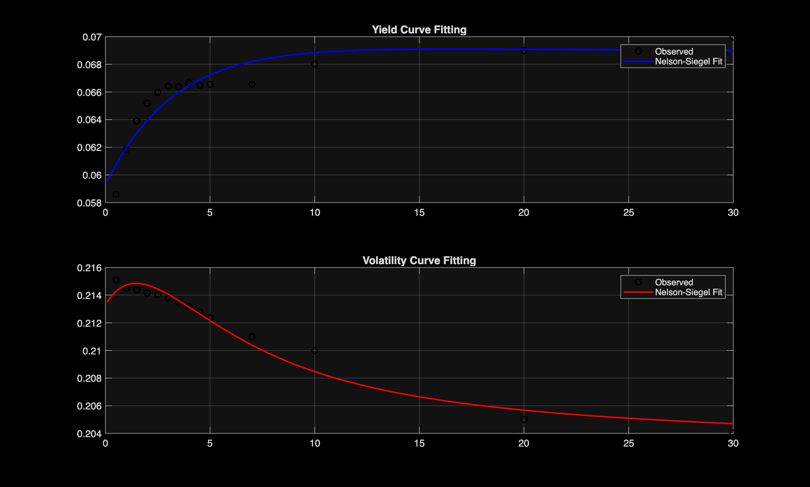
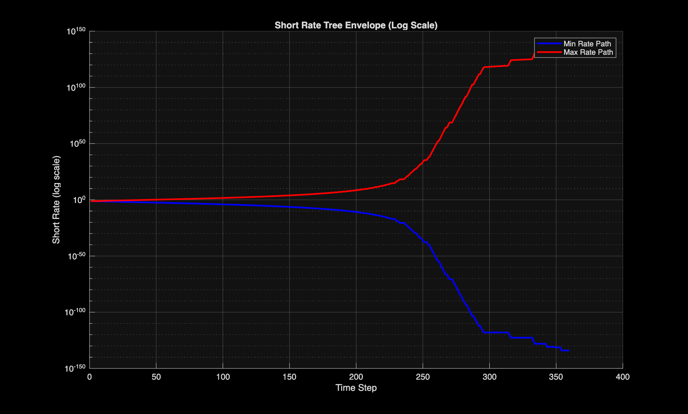
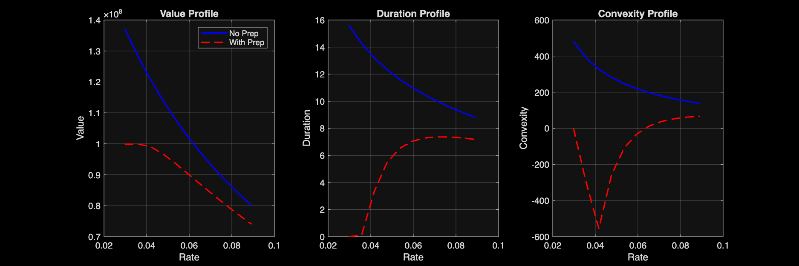

Fixed Income Assignment: BDT Short-Rate Tree & MBS Valuation
Objective: Replicate the Black-Derman-Toy (BDT) short-rate tree model, estimate smooth yield/volatility term structures using the Nelson–Siegel model, and value a Mortgage-Backed Security (MBS) with prepayment options.
1. Estimating Yield and Volatility Term Structures (Nelson-Siegel)
The goal of this subtask was to apply the Nelson Siegel YIELD function to an incomplete set of market yields and volatilities. We construct a model where placeholder parameters are optimized using the fminsearch function to minimize the squared error between model and market data.
We observe that the volatility curve fits very well, while the yield curve visually has larger residuals. This is a trade-off: using more complex smoothers might introduce overfitting.

2. Replicating the BDT Short-Rate Tree
We construct a short rate tree from the fitted bond prices and volatilities. The model price and volatility are calibrated using a loop where we minimize the difference between model-implied values and market data.
The tree is fitted to the Nelson-Siegel interpolated estimates. As seen below (in log-scale), the short rate tree expands rapidly. However, extreme outcomes are unlikely in a 360-step binomial distribution and have limited impact on MBS pricing.

3. Valuation of Mortgage-Backed Security (30-Year)
We value a mortgage with a face value of 100M. For the mortgage with a prepayment option, the value is constrained: if the borrower can refinance cheaper, they will.
Initial Valuation Results
Monthly Payment: 666676.9083
Value (No Prepayment): 102204316.7698
Value (With Prepayment): 90274841.8653
Option Value: 11929474.9045
4. Sensitivity Analysis: Duration and Convexity
We test the mortgage value under shifted short rate tree scenarios (scaling the fitted tree up or down). This reveals the "Negative Convexity" risk of MBS.

Interpretation: Looking at the convexity (rightmost plot), we see a downwards spike for the MBS with prepayment options. This signifies "Negative Convexity." As rates fall, price appreciation is capped because borrowers refinance. As rates rise, the duration extends (borrowers hold onto cheap loans), increasing price sensitivity to further rate hikes.